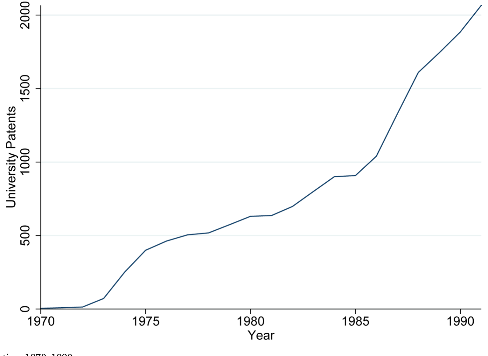
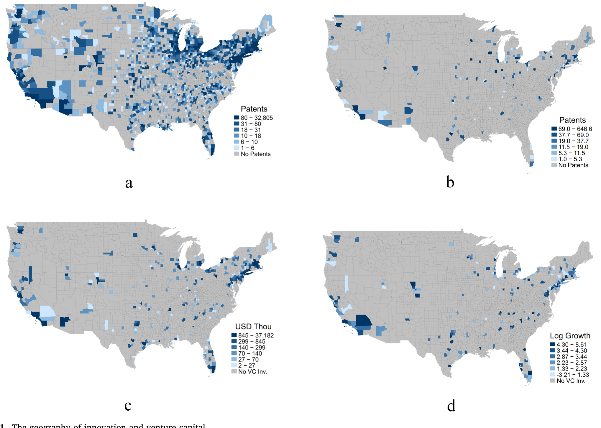
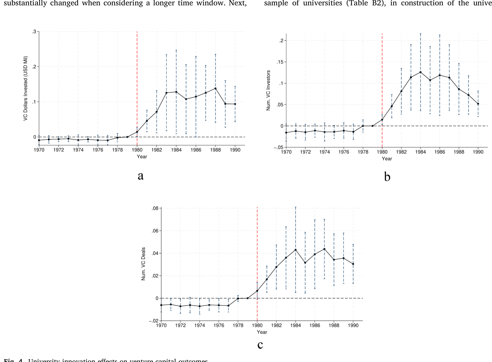
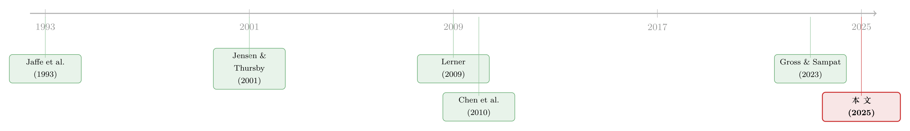

资本会自己长出来吗？——一部法律如何把风险资本「吸」向大学城
本文读的是 Fehder, Hausman & Hochberg (2025, Journal of Financial Economics)：作者借助 1980 年「拜杜法案」(Bayh-Dole Act) 这一改变大学专利激励的制度突变，证明了一件事——当一个地区可商业化创新的供给突然上升时，风险资本 (venture capital, VC) 会被「吸」过来。在同一个县内部，越是贴近本地大学研究强项的行业，1980 年后拿到的 VC 越多：每一个标准差的「创新指数」对应 $109,000 的额外 VC，折算下来,大学创新大约解释了这些地区 VC 增量的 16% 以上。
1 一个先有鸡还是先有蛋的老问题
先看一组让人有点不舒服的数字。2019 年，硅谷一地就拿走了全美 39% 的风险资本；前三大城市拿走了 60%；前五大拿走了 69%。换句话说，把美国地图摊开，风险资本几乎全挤在几个针尖大的点上，剩下大片土地常年颗粒无收。
于是，无数地方政府都想问同一个问题：怎么把 VC 吸引到我这儿来？ 过去几十年里，政策工具箱里翻来覆去就那么几样——给早期投资减税、设立政府背景的引导基金、直接补贴 VC 进驻。结果呢？用文献里反复出现的一个词来形容，叫「mixed success」（成败参半）。钱砸下去了，热闹一阵子，但真正能长出一个可自我循环的创新集群的，少之又少。
为什么这么难？因为这里藏着一个经典的「先有鸡还是先有蛋」难题。创新与资本之间，是一种双向的纠缠关系：你可以说「因为有了钱，所以创新被孵化出来」，也可以反过来说「因为先有了值得投的创新，钱才闻着味儿赶来」。两个故事都讲得通，数据上也常常分不开。学界把这叫做「innovation and capital」的内生性死结——你看到 VC 和创新总是结伴出现，却始终说不清是谁先动的手。
这篇论文的野心，正是要把这个结打开。它押的是一个不那么主流、但越想越合理的方向：
也许，一个地区真正稀缺的，从来不是资本——而是值得资本去投的、可商业化的创新。如果你能凭空增加「好项目」的供给，钱自己会找上门。
2 引言：换一个政策的发力点
作者把话说得很直白：以往的政策都盯着「供给资本」这一端使劲——减税、引导基金、补贴 VC。但如果约束根本不在资本侧呢？他们提出的替代思路是，去干预「可商业化创新的供给」这一端，让私人资本顺势流进来。
这听上去很美，但要验证它，你得找到一个只冲击「可商业化创新供给」、而不直接冲击资本的外生变化。这正是全文最难、也最漂亮的地方。
接着，一个自然的问题是：到哪儿去找这样一个干净的冲击？
3 识别策略：一部法律，加上「大学各有所长」
作者找到的那把钥匙，是 1980 年 12 月通过的 拜杜法案 (Bayh-Dole Act)。
要理解它的威力，得先看它之前的世界有多荒诞。二战以来，美国联邦政府一直是科研经费的最大金主，大学研究的大头靠的就是联邦拨款（1972–1980 年间，大学科研经费的 66–69% 来自联邦）。但有一条要命的规矩：用联邦经费做出来的发明，知识产权归联邦政府。研究者可以申请专利，却拿不到许可费——除非跟拨款机构单独谈一份繁琐的「机构专利协议」(IPA)。结果是什么？1976 年联邦政府手握 28,000 项专利，只有 5% 被许可出去。绝大多数公共资助的发明，就这么躺在档案柜里发霉，既没人宣传，也没人商业化。发明人自己——本该是最懂这项技术的人——压根没有动力去推销它。
拜杜法案一举掀翻了这张桌子：它把联邦资助研究产生的知识产权，从政府手里转交给大学，允许大学持有专利、保留许可费收入，作为交换，也要求大学积极推动商业化。一夜之间，大学和教授有了申请专利、设立技术转移办公室 (Technology Transfer Office, TTO)、把发明许可给企业的强烈动机。一股「可商业化创新」的洪流，开始涌向大学周边的本地经济。

Figure 2: University patenting, 1970–1990
但问题来了：拜杜法案是一部全国性法律，它对所有大学一视同仁。如果家家都受冲击，横截面的差异从哪儿来？没有差异，就没有对照组，因果识别也就无从谈起。
这才是真正关键的一步：作者敏锐地抓住了一个事实——大学各有所长。
举两个论文里反复出现的例子。拜杜法案通过时，德州大学奥斯汀分校 (UT Austin) 有一个全美顶尖的电子与计算机工程系，但生物科学相对一般；与之相反，约翰·霍普金斯大学 (JHU) 是生物科学的重镇，却不以计算机见长。于是，同样一部法案落地，在奥斯汀释放出来的可商业化创新，主要集中在电子、计算机相关行业；而在 JHU 所在的巴尔的摩，则集中在制药、生物相关行业。
这就给了作者一个绝妙的「县内—跨行业」识别：把一个地理区域（县）摁住不动，比较同一个县里那些「贴近本地大学强项」与「远离本地大学强项」的行业，在 1980 年前后所获 VC 的差异。 奥斯汀的计算机行业 vs. 奥斯汀的制药行业；巴尔的摩的制药行业 vs. 巴尔的摩的计算机行业。
用大白话说，回归的骨架大致长这样（单位是「县 × 行业 × 年」）：
$$ VC_{c,i,t} = \beta \left( \text{Innovation}_{c,i} \times \text{Post}_t \right) + \gamma_{c,i} + \delta_{c,t} + \theta_{i,t} + \varepsilon_{c,i,t} $$
这里 \(c\) 是县、\(i\) 是行业、\(t\) 是年份；\(\text{Innovation}_{c,i}\) 衡量行业 \(i\) 与县 \(c\) 本地大学研究强项的贴近程度（作者用一个由大学专利及其引用构造的「创新指数」来度量），\(\text{Post}_t\) 是 1980 年后的虚拟变量。\(\beta\) 就是我们要的那个数：在同一个县、同一段时间里，更贴近大学强项的行业，是否拿到了更多 VC。
而真正让识别站得住脚的，是那三组固定效应：
- \(\gamma_{c,i}\)（县 × 行业）：吸收掉「某个县的某个行业天生就 VC 多」这类长期差异；
- \(\delta_{c,t}\)（县 × 年）：吸收掉「某个县某一年整体经济火热」这类地方冲击；
- \(\theta_{i,t}\)（行业 × 年）：这一组最关键——它吸收掉「全美生物科技行业在 80 年代整体起飞」这类全国性的行业趋势。有了它，\(\beta\) 就不可能只是某个行业的全国大潮，而必须是「这个县、这个行业、因为本地大学恰好擅长它」所带来的额外增量。
于是，剩下的识别变异，几乎被逼到了墙角：它只能来自「某个大学在某个领域恰好很强，于是拜杜法案在它周边的对应行业释放出更多可商业化创新」。
4 数据：用专利给「大学强项」画像
要把上面这套设计落地，作者需要三类数据：
- 专利数据：来自 NBER 专利数据项目 (Hall et al., 2001)，覆盖美国专利商标局 1976–2006 年授予的实用专利，含申请/授予年份、受让人及其地理位置、技术类别、前后向引用。作者用其中归属于大学（及大学附属医院）的专利子集，来刻画每所大学在哪些研究领域「很能打」，再把这些研究领域对接到可能用到它们的行业。同时，用事前（1980 年前）企业专利的分布，作为「VC 本该流向何处」的反事实参照。
- 风险资本数据：来自 VentureXpert，按县度量本地的 VC 投资。请注意一个重要细节——作者度量的是整个本地生态里的 VC 投资，而非仅仅投向「大学自己孵化的项目」的钱。
- 创业数据：来自 Guzman & Stern (2020) 对企业注册及其最终成功退出事件的估计，用来刻画高成长创业的进入。
观测单位是「县 × 行业（× 年）」。样本窗口围绕 1980 年前后展开。
先别急着看回归，作者放了一张「不看模型、光看地图就已经心里有数」的图。

Figure 1: The geography of innovation and venture capital
如图 1 所示，把四张地图叠在一起看：(b) 是 1980 年前的大学专利分布，(d) 是 1980–1990 年的 VC 增长分布。两张图的亮点高度重合——事前大学专利密集的地方，恰恰就是事后 VC 增长最猛的地方。作者说得很妙：这种空间上的吻合如此明显，以至于「在你还没开始看跨行业变异之前，光凭肉眼就能感觉到——事后的 VC，被事前的大学专利吸过去了」。
5 主要结果：钱，确实顺着创新流过来了
把那套县内—跨行业的回归跑出来，核心结论非常干净：
- 拜杜法案之后，每增加一个标准差的大学「创新指数」，对应的「县 × 行业」VC 增加约
$109,000；若换一种度量，每增加一次对大学专利的引用，对应约$45,000。 - 加总到县这一层，平均每个县因拜杜法案带来的 VC 增量约为
$3.9 million。 - 而拜杜法案前后那二十年里，平均一个「大学县」VC 总共增加了约
$23.4 million。两相对照，拜杜法案这一冲击，解释了这些地区 VC 增量的 16% 以上。 - 如果把紧随其后、在 1990 年代初爆发的那一波 VC 热潮也算进来，这个比例会跳升到三分之一以上。

Figure 4: University innovation effects on venture capital outcomes
更妙的是两个加固性的发现。
其一，控制掉「钱本来就在那儿」之后，结论依然成立。 一个最自然的质疑是：会不会只是这些大学城原本 VC 就多、企业创新就活跃，跟拜杜法案没关系？作者把事前的企业专利分布和事前的 VC 分布都塞进控制变量——结果 \(\beta\) 依然显著为正。也就是说，这股 VC 流向，是在「原有格局」之上新增出来的。
其二，效应在「事前联邦经费最多」的大学城被放大。 那些在拜杜法案之前就拿到最多联邦科研经费的大学周边，法案之后 VC 的增量最大。这恰恰是机制该有的样子：联邦经费越多 → 积压的、未被商业化的发明越多 → 拜杜法案一松绑，释放出来的可商业化创新越汹涌 → 吸来的资本越多。它从侧面再次印证了「释放可商业化创新供给」这条因果链，也顺带点出了联邦科研投入对创新枢纽的不可或缺。
6 真正的机制：VC 找的是「人」
到这里，故事其实还缺一环。VC 被吸过来了，可它具体是被什么吸过来的？是冲着大学的专利本身，还是冲着别的什么？
于是反转出现了。作者借助 Guzman & Stern (2020) 的创业数据，做了一个层层递进的拆解：
- 第一步：事前（1980 年前）的可商业化大学创新，是后续高成长创业进入的强预测变量——大学强项所在的地区和行业，冒出了更多有潜力的新创企业。
- 第二步（关键）：一旦在回归里控制住当期的 VC 投资，上面那个预测力几乎被完全抹平。
这两步合在一起，讲的是一个相当锐利的故事：VC 精准地找到、并资助了那些由前沿大学创意催生出来的高成长创业者。 换句话说，资本不是漫无目的地撒向「有专利的地方」，而是顺着「大学创意 → 高成长创业者进入 → VC 下注」这条链条，把人挑出来投。可商业化创新吸引资本的微观机制，落在了「企业家」这个节点上。
这也跟另一条文献对上了号：作者发现，事前的大学专利不仅预测 VC，还预测事后的企业专利分布（即便控制了事前的企业创新）——这与 Gross & Sampat (2023) 关于「政府科研经费对企业创新集群有极其持久的影响」的发现遥相呼应。
别忘了还有一个并行的故事：1979 年 ERISA「谨慎人规则」(Prudent Man Rule) 的澄清放开了养老金投资高风险资产，加上 1980 年的《小企业法》和 ERISA「安全港」规定确立了有限合伙这一 VC 主流组织形式——这三项制度变化让 80 年代初涌入 VC 行业的承诺资本大增。资本本来就在四处寻找出口；而拜杜法案恰好在此时此刻，在大学城制造出一批值得投的好项目。供给与需求两股力量在大学周边相遇，集群于是成形。
关于「创新如何在地理上扩散、并把资源吸引过去」这件事，本博客此前评述过一篇姊妹研究（参见《天线效应：硅谷为什么离不开波士顿？》）；而「创业本身会不会传染、又只在哪些人之间传染」，也可参见《创业会「传染」吗？》。把这几篇放在一起读，会更能体会「集群」二字背后那张由人、知识与资本织成的网。
7 文献脉络
要看清这篇论文站在哪儿，得把三条线拧在一起。
第一条，是集聚经济 (agglomeration economies) 的老传统。 从 Marshall (1890) 开始，经济学家就在追问：为什么企业愿意扎堆？答案无非知识外溢、投入产出关联、劳动力池这几样。Jaffe, Trajtenberg & Henderson (1993) 用专利引用证明了知识外溢「高度本地化」——知识是有地理半径的。这篇论文的贡献，是给这张网补上了一个常被忽略的节点：风险资本本身，也是一种高度本地化、且对创新供给高度敏感的关键投入。
第二条，是风险资本地理学。 Lerner (1995) 早就指出 VC 偏好就近监督和辅导被投企业；Chen, Gompers, Kovner & Lerner (2010) 更直接地论证了 VC「Buy local」——资本天然地往身边投。Lerner (2009) 则系统盘点了各国政府「人造创新集群」的成败，给出了那句著名的「成败参半」。本文正是接着 Lerner 的诘问往下走：既然直接砸钱效果不佳，那换个发力点行不行？
第三条，是大学与政府科研经费对经济的影响。 Jensen & Thursby (2001) 强调了大学技术的「胚胎」状态——它离能卖钱还差得远，需要外部主体投入大量转化研究。Babina et al. (2023) 证明了削减联邦经费会让大学创新更不可及；Gross & Sampat (2023) 则刻画了政府 R&D 对创新集群极其持久的塑造力。本文恰好嵌在这条线的当下：它指出大学创造集群增长的一个新机制——通过吸引风险资本，来为本地创业者的前沿创新融资。

8 评论与延伸（Q&A + 研究方向）
(a) 几个可能的疑问
Q：拜杜法案是全国性的，凭什么能当「准实验」用？
关键不在法案本身，而在「法案 × 大学事前强项」这个交互项。法案提供了时间维度的突变（1980 年前后），大学各自不同的研究强项提供了「县 × 行业」维度的横截面变异。再叠上「行业 × 年」固定效应吸收全国性行业趋势，识别就被逼到了「某大学恰好擅长某领域 → 周边对应行业受冲击更大」这一极窄的来源上。
Q：会不会只是大学城本来 VC 就多、创新就活跃，跟法案无关？
这正是作者重点防的。他们把事前的 VC 分布与事前的企业专利分布都作为控制变量塞进回归，\(\beta\) 依旧显著为正。也就是说，效应是在原有格局之上新增的，而非旧格局的简单延续。
Q：「创新吸引资本」会不会其实是反过来——资本先到，才催生了创新？
这恰恰是全文要打开的「先有鸡还是先有蛋」死结。识别的妙处在于：可商业化创新的冲击来自一部外生的法律和大学既有的研究禀赋，而非来自资本的流入。机制检验进一步显示，控制当期 VC 后，事前大学创新对创业进入的预测力被抹平——方向是「创新（经由创业者）→ 资本」，而不是反过来。
Q：度量的是投向大学项目的钱，还是整个本地生态的钱？
是整个本地生态的 VC，而非仅投向大学孵化项目的钱。这一点很重要：它说明拜杜法案释放的创新不只惠及大学自己的衍生公司，而是激活了相关行业的企业创新与创业，VC 是冲着这整片被点燃的生态来的。
Q：那个「16%」和「1/3」差距为何这么大？该信哪个？
取决于样本窗口是否包含 1990 年代初那波 VC 热潮。基准的 16% 用的是法案前后较窄的窗口；若把紧随其后、同样高度偏向本地大学相关技术的早期 90 年代繁荣纳入，比例升到 1/3 以上。我倾向把 16% 看作保守下界——它把那波最可能由大学创新驱动的繁荣排除在外了。
Q：对今天想搞创新集群的政策制定者，最硬的一条启示是什么？
与其直接补贴 VC 或设政府引导基金（成败参半），不如把钱花在扩大可商业化创新的供给上——支持技术编码与转移、促进非正式知识共享、积累技能型劳动力。资本会闻着好项目的味道自己跟过来。这可能比「人造资本」更划算。
(b) 几个可能的研究问题与提案
1. 可商业化创新冲击会不会外溢到公司债/信用市场？
【经济故事】本文聚焦 VC（股权融资）。但大学城里被点燃的企业创新，长大后同样要发债融资。一个自然的问题是：可商业化创新的正向冲击，是否也压低了本地企业的信用利差、改善了它们的债券流动性？机制可能是创新提升了抵押品价值与成长前景。 【可行性】中。可用 NBER 专利数据 × TRACE 公司债交易 × Compustat，沿用「县 × 行业 × 年」的设计，把被解释变量换成发行利差或流动性指标。难点在于发债企业样本偏大、偏成熟，与 VC 阶段的初创企业不在同一生命周期，需谨慎匹配。
2. 外资（外国企业受让人）会不会也被这股创新供给吸引？
【经济故事】专利数据里的受让人本就包含外国公司。拜杜法案释放的可商业化创新，是否也吸引了外国企业在对应大学城、对应行业增设研发或并购本地初创？这能把「资本被创新吸引」的命题从本地 VC 推广到跨境资本。 【可行性】中。NBER 专利数据含受让人国别，可识别外国受让人在各县各行业的专利与并购足迹；识别仍可沿用本文的法案 × 大学强项交互。挑战在于外资决策受汇率、贸易政策等众多混杂因素影响，需要更强的控制。
3. 这套机制对「资本充裕但创新匮乏」的地区是否对称失效？
【经济故事】本文证明「增加创新供给能吸来资本」。反过来呢？在那些 80 年代初 VC 供给冲击很强、但本地大学恰好没有对应强项的县，资本是否「无处可投」、最终外流？这能直接检验「资本侧约束 vs 创新侧约束」哪个更具决定性。 【可行性】高。本文的数据与设计已基本就绪，只需把样本切成「高/低事前联邦经费」「有/无对应大学强项」的子组做异质性分析，看资本是否在缺乏本地好项目时系统性地流出。
4. TTO 的「质量」而非「有无」，是否解释了集群成败的分化？
【经济故事】拜杜法案后大学纷纷设立技术转移办公室，但运营水平参差。同样的可商业化创新存量，TTO 强的大学是否把更多创新真正「推」进了市场、从而吸来更多 VC？这把冲击从「政策层面」细化到「执行层面」。 【可行性】中。需要 TTO 设立时间、人员、许可合同等机构层面数据（部分见于 AUTM 调查与既有文献），与本文的 VC 结果对接；内生性是主要担忧——好大学既有强 TTO 又有强创新，需要额外工具。
9 参考文献与我的判断
贡献。 这篇论文最漂亮的地方，是把一个看似无解的「创新与资本孰先孰后」难题，靠「一部全国性法律 × 大学各有所长」拆成了一个干净的县内—跨行业准实验。它给出的答案——约束往往在创新供给侧而非资本侧——既反直觉，又对政策极有分量：它暗示「人造 VC」不如「人造好项目」。机制环节（VC 精准捕捉由大学创意催生的高成长创业者）则把宏观相关性落到了微观行为上，做得很扎实。
对识别的担忧。 我有三点保留。其一，「创新指数」依赖专利—行业的映射，而专利只是技术转移的一部分，映射本身的测量误差可能让 \(\beta\) 被低估（也可能引入偏误）。其二，三项 ERISA/小企业法的并行冲击虽被作者作为「资本侧故事」纳入叙事，但它与拜杜法案在时间上几乎重叠，要把「创新拉动」和「资本推动」彻底解耦，仍有赖于「行业 × 年」固定效应足够干净——这是个强假设。其三，大学的研究强项并非天上掉下来的，它本身可能与本地产业结构内生相关，尽管「县 × 行业」固定效应能吸收掉时不变的那部分。
后续想看到什么。 我最想看的，是把因变量从 VC 换成债务与信用市场指标，看可商业化创新的冲击是否同样能压低本地企业的融资成本、改善债券流动性——这会把「创新吸引资本」从股权一端推广到整个资本结构。其次，是对「资本充裕但创新匮乏」地区的对称性检验：如果资本真的会因为「无处可投」而外流，那就是对本文核心命题最有力的反面佐证。
参考文献
- Babina, T., He, A.X., Howell, S.T., Perlman, E.R., Staudt, J. (2023). Cutting the innovation engine: how federal funding shocks affect university patenting, entrepreneurship, and publications. Quarterly Journal of Economics 138, 895–954.
- Chen, H., Gompers, P.A., Kovner, A., Lerner, J. (2010). Buy local? The geography of venture capital. Journal of Urban Economics 67, 90–102.
- Denes, M.R., Howell, S.T., Mezzanotti, F., Wang, X., Xu, T. (2023). Investor tax credits and entrepreneurship: evidence from U.S. States. Journal of Finance 78, 2621–2671.
- Feldman, M., Feller, I., Bercovitz, J., Burton, R. (2002). Equity and the technology transfer strategies of American research universities. Management Science 48, 105–121.
- Fehder, D.C., Hausman, N., Hochberg, Y.V. (2025). Innovation and capital. Journal of Financial Economics 169, 104029.
- Gross, D.P., Sampat, B.N. (2023). America, jump-started: World War II R&D and the takeoff of the US innovation system. American Economic Review 113, 3323–3356.
- Guzman, J., Stern, S. (2020). The state of American entrepreneurship: new estimates of the quantity and quality of entrepreneurship for 32 US states, 1988–2014. American Economic Journal: Economic Policy 12, 212–243.
- Hall, B.H., Jaffe, A.B., Trajtenberg, M. (2001). The NBER patent citation data file: lessons, insights and methodological tools. NBER Working Paper No. 8498.
- Jaffe, A.B., Trajtenberg, M., Henderson, R. (1993). Geographic localization of knowledge spillovers as evidenced by patent citations. Quarterly Journal of Economics 108, 577–598.
- Jensen, R., Thursby, M. (2001). Proofs and prototypes for sale: the licensing of university inventions. American Economic Review 91, 240–259.
- Lerner, J. (1995). Venture capitalists and the oversight of private firms. Journal of Finance 50, 301–318.
- Lerner, J. (2009). Boulevard of Broken Dreams: Why Public Efforts to Boost Entrepreneurship and Venture Capital Have Failed—and What to Do About It. Princeton University Press.
- Marshall, A. (1890). Principles of Economics. Macmillan.